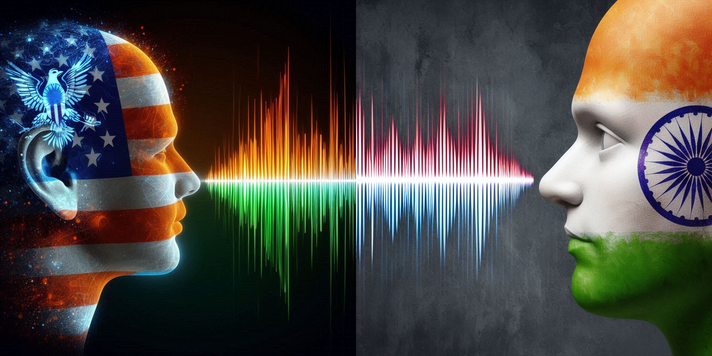
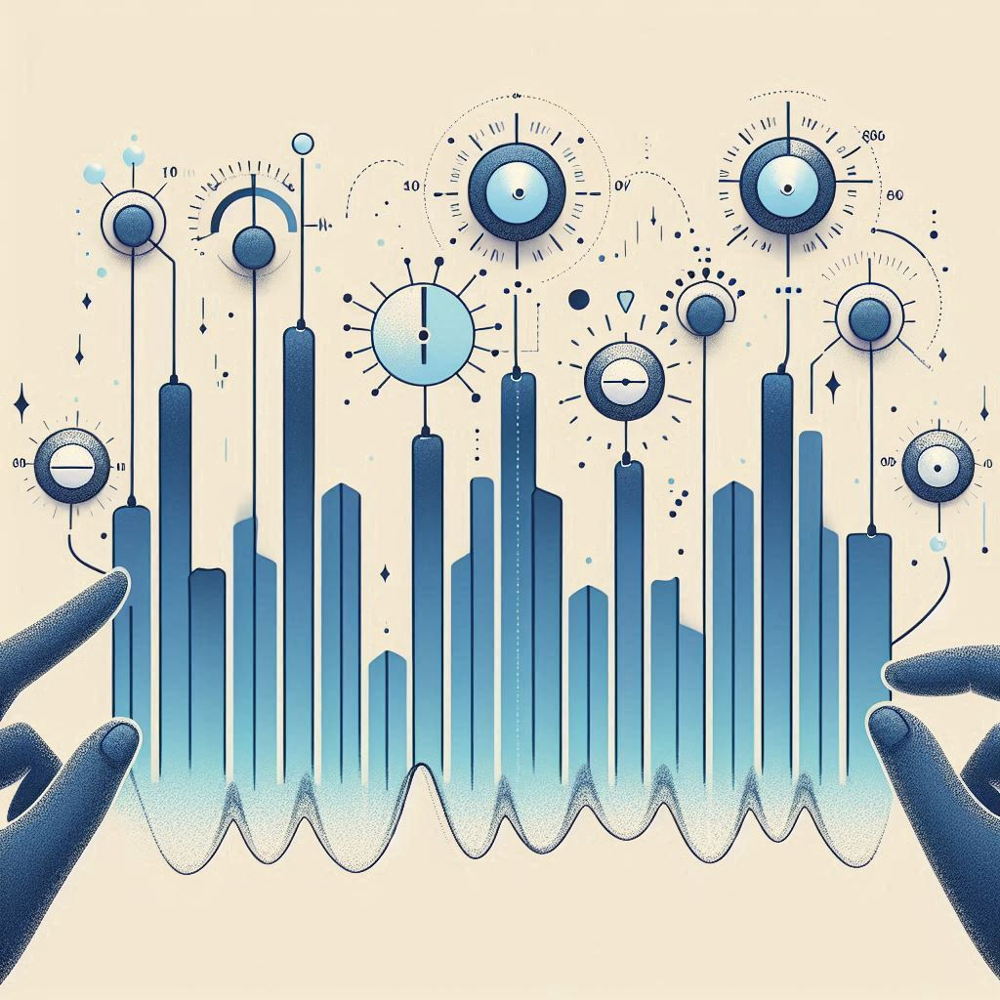
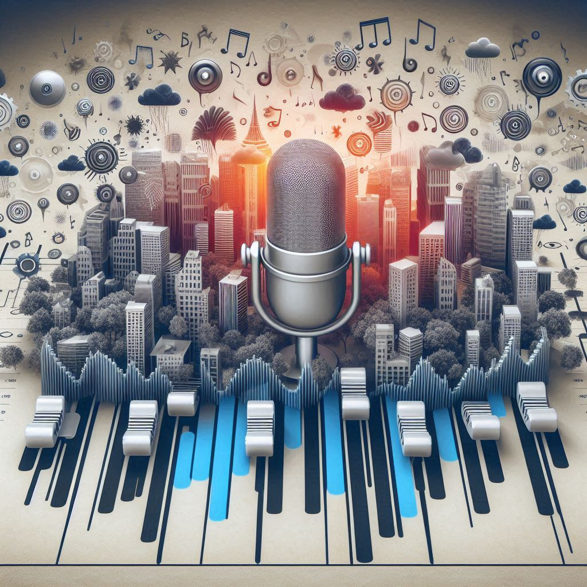

Hi, I'm Karolos Nikitaras, an AI enthusiast with a passion for developing intelligent systems that solve real-world problems. I have 4 years of experience in the audio domain, where I've worked on multiple text-to-speech and speech-to-speech tasks, and 1 year of experience in the music domain. Check out some of my speech generation projects below!
My Speech Generation AI Projects

This model is trained on american and indian english speech corpora, perfoming modeling and control over accent in the generated speech.
Accent Conversion

This work performs both fine-grained and coarse-grained prosody modeling, enabling style transfer.
Style Transfer
This model performs unsupervised and fine-grained prosody modeling and then trains AR and Flow networks for predicting those prososdy latents through text, while comparing them in terms of expressiveness and naturalness.
Expressive Speech Synthesis

This is the reproduction of a paper that models and controls prosody in an unsupervised, fine-grained and hierarchical way. It learns 3 phoneme-level dimensions that turn out to be energy, F0 and duration.
Prosody Control

This work factorizes speech into linguistic content, prosody, speaker voice and noise.
Noise Control